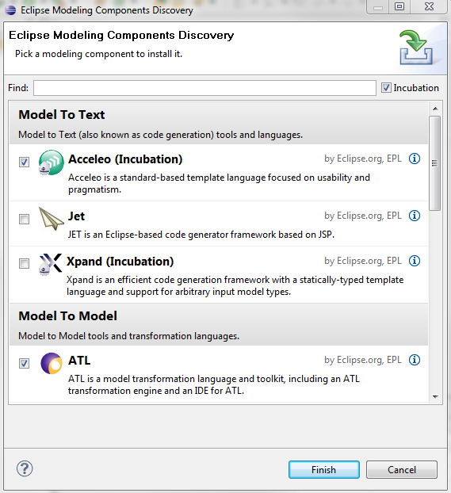

Acceleo can be downloaded and installed in a number of ways. If you have an existing Eclipse installation and simply wish to install Acceleo in it, Installing through the update site is the easiest way. If you'd rather install a new Eclipse with Acceleo, you may want to take a look at the facilities provided by the amalgamation project.
For those of you that need to retrieve the zips of Acceleo, you can either look at the latest releases or the maintenance releases if you need one of the 2.x releases.
Note that whatever the installation procedure you choose, examples are available from the menu right-click => New => Examples => Acceleo Plug-ins.
The easiest (and quickest) way of installing Acceleo is to use the Helios update-site.


The latest versions of Acceleo are the 3.x stream builds. Check them out on the project's download page.
Maintenance builds of Acceleo 2.x are still available on the maintenance versions download page.